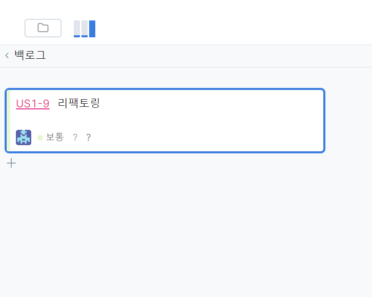
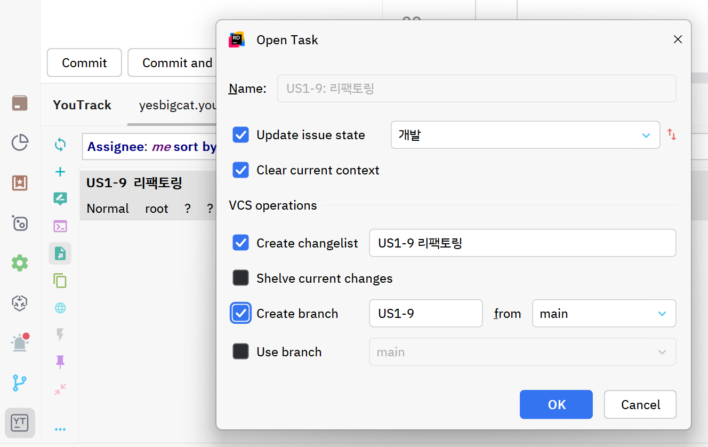
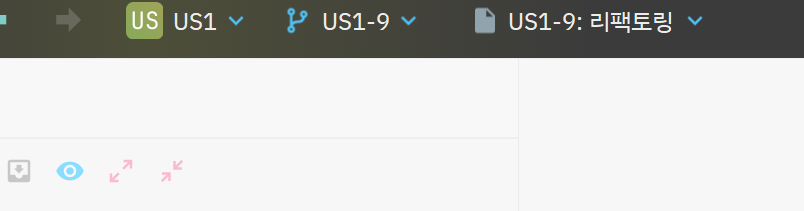
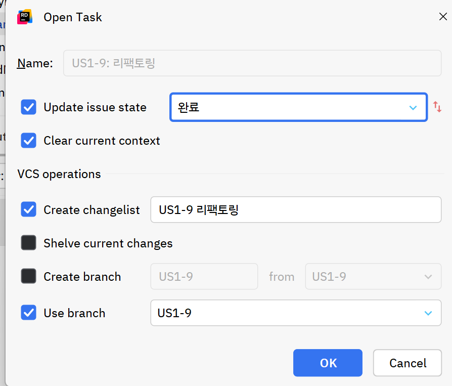
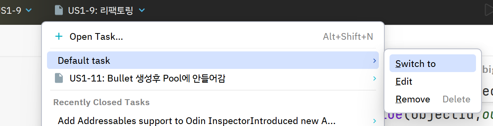
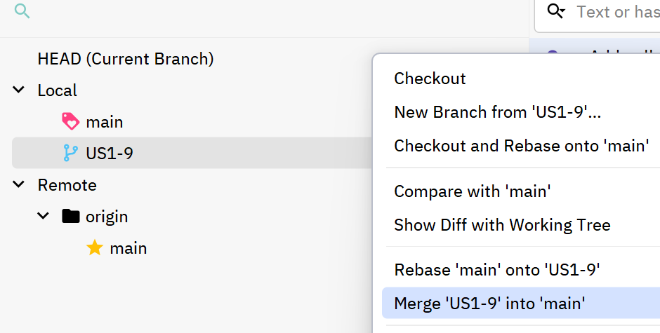

YouTrack과 Rider와 Git
- YouTrack과 Git을 활용 시작
Youtrack Cloud Page에서 새 이슈 생성하기
 에디터에서 Open Task를 열어 보면 백로그 고유번호 깃브랜치 이름이 동일하게 나오는것을 볼 수 있습니다.
 OK를 선택하면 에디터 하단에 시간이 체크됩니다.
상단에는 Task명칭과 Git Branch가 나옵니다.

- YouTrack과 Git을 활용 완료(순서중요)
먼저 OpenTask의 완료를 선택하고 OK합니다.
이는 칸반보드의 Task가 자동으로 완료로 옮겨짐을 의미합니다.
 상단의 Task를 Default Task로 변경해줍니다.
이는 작업한 Task의 시간 체크를 포함한 종료를 의미합니다.
 Git을 Commit 하고 main브랜치로 Checkout 합니다.
작업한 브랜치를 merge "작업branch" into "main"하여 main으로 병합 합니다.
 push를 하여 해당 일감을 마무리 합니다.
그리고 필요하지 않다면 기존 Task와 GitBranch를 삭제합니다.

YouTrack과 Task와 Git 작업 흐름도
Last modified: 16 October 2024